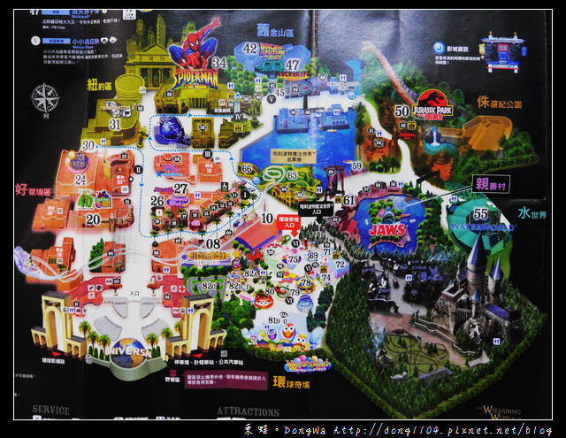

『園區』
●紐約
●蜘蛛人驚世冒險
在2004年1月23日才正式開幕的「蜘蛛人驚世冒險」（The Amazing Adventures of Spider-Man - The Ride），是日本環球影城自2001年開業以來最大的投資項目，耗費140億日圓及歷時逾1年半建成。更請來日本著名演員陣內孝則、女星菊川憐、山田優、Bob Sapp，台灣歌手王力宏等等出席揭幕儀式。 這個「蜘蛛人」遊戲，是參照美國人氣漫畫《蜘蛛人》設計，當大家往大宅邁進時，便可看到跟任職報館攝影師的「蜘蛛人」Peter Parker在美國紐約曼哈頓的Daily Bugle辦公室概況，期間電視螢幕突然傳來由八爪博士率領的邪惡集團入侵曼哈頓並搶去自由神像的消息，而在報館老闆的邀請下，大家便紛紛戴上3D立體眼鏡，坐上每部可容納12人、名為Scoop的列車，展開全程約5分鐘的曼哈頓歷險之旅，在沿途教人拍案叫絕的立體影像下，體驗蜘蛛人與邪惡集團的驚心大戰。2013年夏天，《蜘蛛人驚世冒險》在進行改善工程之後會在7月5日重新開放，更新後遊戲會使用一幅闊18米、高9米的巨型螢幕，播放超高清4K立體畫面。
●魔鬼終結者2D/3D:超時空之戰
File:T2 3D at Universal Studios Japan 1.jpg
魔鬼终结者2 3D:超時空之戰。
魔鬼终结者2 3D：超時空之戰（T2 3-D: Battle Across Time）是一齣3D電影加現場表演。它是電影《魔鬼终结者2》的延續篇，當中的12分鐘電影片段耗資6,000萬美元拍攝及製作。由原作導演占士·金馬倫親自執導，琳達·漢密爾頓、愛德華·弗朗、阿諾·施瓦辛格和羅伯特·派屈克等等都重演了他們在電影中的角色。表演室內以六台投影機同時投放映像，達到3D效果。現場更有演員表演和煙霧效果配合劇情發展。
●環球聖誕仙境
在聖誕期間，紐約區在每日17:45開始，都會上演一齣歷時約20分鐘的大型晚間歌劇及聲光表演，這個名為《天使的奇蹟II The Song of Angel》的表演，正是2008年至2010年的聖誕重頭表演《天使的奇蹟》的續篇，當年《天使的奇蹟》描述主角安德魯及梅麗莎在巴黎邂逅，並在聖誕夜互相表白心意，既在2009年獲得主題公園業界組織IAAPA的綜合製作組別最優秀獎，被譽為世界最棒的晚間表演，更在2010年取得創紀錄的九成六觀眾滿意度。
●好萊塢
●舊金山
回到未來模擬遊戲 — 以電影系列回到未來為主題。遊客會坐上模擬時光機，與布朗博士一起追捕Biff Tannen。
●侏儸紀公園
2016年，「The Flying Dinosaur」過山車正式啟用，全長1124米，高低落差有37.8米。過山車的座位是懸吊式，背向天、面向地，模彷被恐龍抓走的感覺。
●親善村
親善村漫步道遊戲、大白鯊
●環球奇境
2012年3月16日，日本環球影城新增合家歡的環球奇境園區，新園區由原有的史努比電影工作室加建，把Hello Kitty、史努比及芝麻街三大卡通經典聚首一堂[9]「Universal Wonderland環球奇境」佔地約3萬平方公尺。
●史努比電影工作室
飛天史努比
●Hello kitty時尚大道
Hello Kitty夢幻蛋糕杯、Hello Kitty's Ribbon Collection
●芝麻街歡樂世界
「芝麻街歡樂世界」，也是Universal Wonderland內佔地最大的園區，室外部分有Elmo載著3至8歲的小朋友兜風學交通規則，又有Ernie跟小朋友一起放橡皮鴨；室內部分則是「Elmo的幻想遊樂場」，波波池、繩網架、發泡積木等，全部為小朋友而設。
●水世界
水世界是一個劇場表演，根據凱文·科斯納（Kevin Costner）主演的電影《水世界》作為藍本，將當中爆破及驚險的場面呈現在觀眾眼前。
●小小兵
紀念品專賣店賣有小小兵文具、毛帽、手套等各式可愛商品，影城內有攤車，販賣小小兵肉包、吉拿棒等食物，最受歡迎的是小小兵造型的爆米花桶。
●哈利波特魔法世界
哈利波特禁忌之旅、鷹馬的飛行